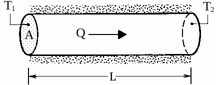
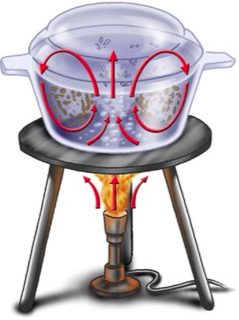
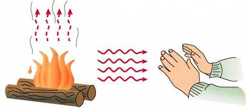

Aula6-44: Propagação de calor
Nas aulas anteriores, aprendemos que o calor é a energia que flui espontaneamente de um corpo de maior temperatura para um corpo de menor temperatura. O calor pode se propagar de três maneiras diferentes:
-
Condução: Nesse processo, as partículas mais agitadas (de maior temperatura) agitam as partículas vizinhas e, assim, a energia flui de uma para outra. Em outras palavras, a condução é o modo de propagação de calor que ocorre por transferência de energia entre as partículas de um determinado meio. Ela ocorre com maior intensidade nos sólidos, depois nos líquidos e com baixíssima intensidade nos gases; no vácuo não ocorre, pois não há partículas nesse meio. Podemos medir a condução por meio do conceito de fluxo de calor, usando a equação de Fourier:
FLUXO DE CALOR: é a quantidade de energia que atravessa determinada área (ou volume) por unidade de tempo.
⚛ A unidade de medida para fluxo de calor é o:
➔ EQUAÇÃO DE FOURIER: é uma equação que fornece o fluxo de calor em um meio em função de três variáveis: área da seção transversal, gradiente de temperatura e coeficiente de condutividade térmica do material.
Em que:
◦ A: área da seção transversal do condutor
◦ g: gradiente de temperatura, que é a razão entre a diferença de temperatura das extremidades do condutor e o seu comprimento:
◦ K: coeficiente de condutividade térmica do material que compõe o corpo

Coeficiente K de algumas substâncias
Material
K (cal/cm.s.°C)
Alumínio
0,5
Aço
0,11
Água
0,0014
Ar
0,00006
|
 |
-
Irradiação (ou radiação): Corpos também podem trocar energia por meio de ondas eletromagnéticas (as ondas eletromagnéticas capazes de transportar energia térmica são, por vezes, chamadas de radiação térmica, para distingui-las das demais — sinais eletromagnéticos e radiação nuclear). Nesse tipo de propagação, não é necessário um meio material, podendo haver propagação até no vácuo.
Uma fogueira, por exemplo, é capaz de emitir ondas eletromagnéticas que aquecem o ambiente, elevando sua energia térmica, ao passo que a energia do fogo diminui. Note que esse trânsito de energia ocorre nos dois sentidos: energia do ambiente chega até o fogo e energia do fogo chega até o ambiente. Só haverá fluxo de calor da fogueira para o ambiente se a fogueira estiver a uma temperatura maior que a do ambiente. Isso acontece porque a emissão de radiação é proporcional à quarta potência da temperatura do corpo. Essa relação é descrita pela lei de Stefan-Boltzmann.

➔ EQUAÇÃO DE STEFAN-BOLTZMANN: é a equação que descreve a potência emitida por radiação.
Em que:
: é a emissividade do corpo
: é a constante de Stefan-Boltzmann, que vale:
: é a área do objeto emissor
: é a temperatura do objeto emissor, em kelvin.